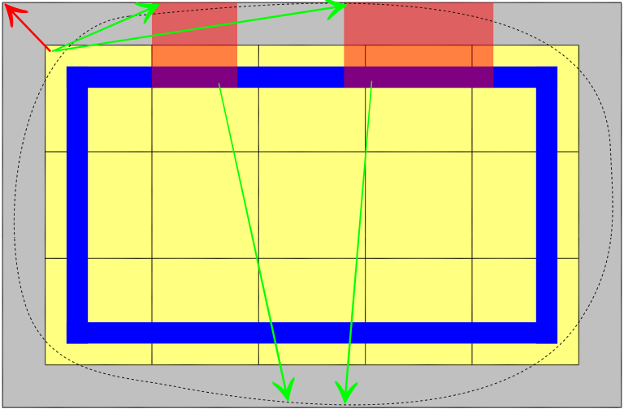

Компонент LocalGrid позволяет создать локальное подпространство моделирования в физическом мире. Это позволяет моделировать объекты внутри этого пространства, как если бы они находились в комнате static, даже если это пространство прикреплено к движущемуся объекту в глобальном мире. Теоретически такое пространство с точки зрения моделирования эквивалентно глобальному пространству только в том случае, если оно движется линейно без ускорения (согласно принципу относительности Галилея), а в противном случае ускорение «ощущается» в нем как внешняя сила (аналогично гравитации).
С помощью компонента LocalGrid вы можете установить порог этого ускорения. Значения ниже этого порога подавляются и не применяются к объектам сетки. Основное преимущество состоит в том, что объекты в таком квази-static пространстве гораздо более устойчивы для моделирования и могут заснуть, когда их скорости станут близки к локальному 0.
Однако локальные сетки также могут быть статически размещены в мире, чтобы оптимизировать обнаружение широкофазовых столкновений. Например, глобальная сетка может иметь довольно крупные ячейки, оптимизированные под относительно редкую, но повсеместную растительность, а здание с большим количеством объектов внутри может иметь оптимальную для его интерьера локальную сетку (если оно многоэтажное, то для каждого этажа может быть даже отдельная сетка). При необходимости LocalGrids можно вложить.
Как это действует
LocalGrid действует как «основная физика объекта», поэтому его необходимо добавить как единственный физический компонент (т. е. он является взаимоисключающим с «твердым телом», «тряпичной куклой», «частицей», «площадью», «транспортным средством» и «тканью»). Внутри он реализует небольшое подмножество функций интерфейса физического объекта. Затем объект LocalGrid можно прикрепить в качестве дочернего к другому физическому «хостовому» объекту, например, к вагону поезда с твердым телом. При запуске игры (или искусственного интеллекта/физики) объекты, центры ограничивающих рамок которых находятся внутри границ сетки, будут автоматически назначены сетке. Они будут возвращены в глобальное пространство при выходе из режима.
Внутри LocalGrid
Объекты внутри локальных сеток могут взаимодействовать с объектами внешней сетки (и наоборот) через порталы. Кроме того, лучевые следы, исходящие из одной сетки, могут покинуть ее через портал. Объекты, ограничивающие рамки которых перекрываются с порталом. ориентированный ограничивающая рамка может взаимодействовать с объектами сетки на другой стороне портала. Чтобы настроить портал, необходимо создать объект с некоторой физической геометрией и связанный к соответствующему объекту LocalGrid (обратите внимание, что связывание объекта — это не то же самое, что вложение родительского/дочернего элемента).
Пример
Простым примером может быть компонент твердого тела с физикой static и коробчатым коллайдером. Для последовательного моделирования все возможные выходы из внутренней геометрии сетки должны быть закрыты порталами. Ничего страшного, если портал больше, чем фактическая геометрия отверстия – это просто означает, что иногда объекты будут выполнять больше проверок на столкновение, чем это абсолютно необходимо. Возможно даже иметь геометрию портала, которая используется только для трассировки лучей портала, используя флаг столкновения лучей в типе поверхности геометрии. Например, первая геометрия портала может представлять собой грубый прямоугольник без столкновений лучей, а вторая может представлять собой более специализированную сетку с столкновением лучей.
Всякий раз, когда объект касается портала, он решает, зарегистрироваться ли ему во внутренней или внешней сетке, проверяя, принадлежит ли его центр специальной геометрии «внутренней проверки». Это должно быть представление внутренней части сетки (в идеале как можно более простое). Физический объект с такой геометрией должен быть связан с объектом портала.
Настройка
Ниже представлена визуализация того, как можно настроить LocalGrid:

Визуализация локальной сетки
Изображение выше: внешний серый цвет — основной объект (например, вагон поезда), жёлтая сетка — объект LocalGrid, синие стены — объекты столкновения static внутри сетки, полупрозрачные красные прямоугольники — порталы, пунктирный контур — объект «внутренняя проверка», красная стрелка — дочернее->родительское вложение, зеленая стрелка — связь объекта